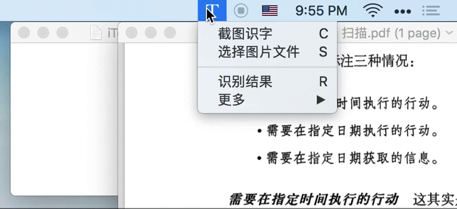
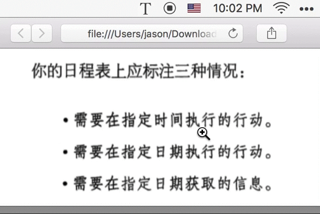
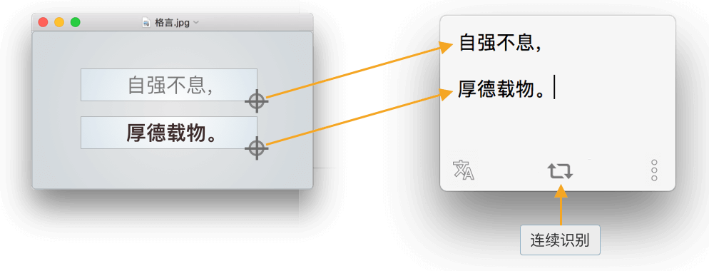
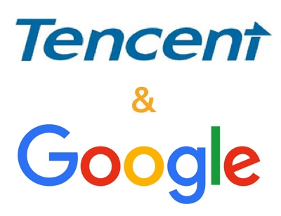
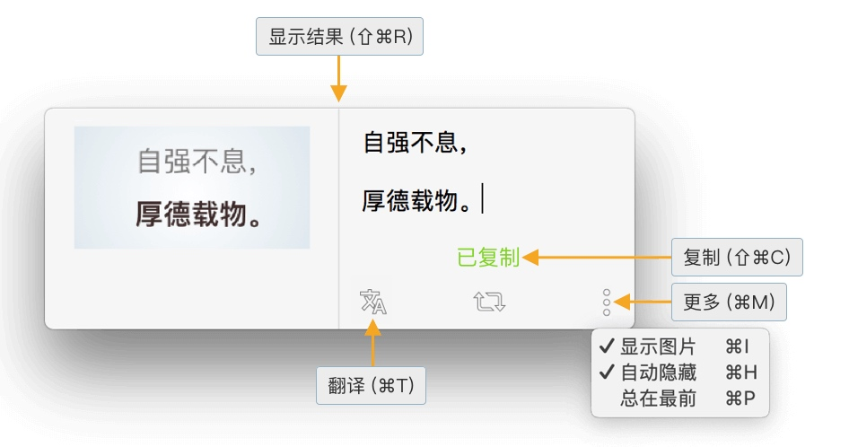
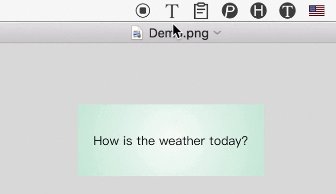

iText 是一款从图片中识别文字的 OCR 工具。
典型使用场景：
从扫描版 PDF 中提取文字
从朋友发来的图片中识别文字
从任意图片中识字
1. 选取图片方便
iText 支持多种方式选择图片，操作非常便利。
1.1 截图即识字
iText 自带截图功能，只需按下⇧⌘1快捷键、截取屏幕任意位置，即可提取该图片中的文字。
小提示：识别后的文字已经复制到系统剪贴板，直接粘贴即可。
1.2 拖拽图片至菜单栏图标识字
比如，当你在电脑上使用微信、QQ 时，好友发了张图片（比如手机拍摄的快递单），你想识别其中的文字（比如快递单号），只需将该图片拖拽至 iText 菜单栏图标即可。

1.3 选择图片文件识字
当然，也可以在对话框中选择图片文件。不过，个人还是建议你直接把该图片文件拖拽至 iText 菜单栏图标，操作直观高效。
1.4 支持连续识别
比如，连续截取 PDF 不同位置的图片，iText 将依次识别其中的文本，并自动将结果拼接在一起。

2. 文字识别精准
你有没有这种经历：你想从一张图片中提取文字，结果发现识别的文字中有一些错误。结果，手动修改这些错误的时间，比自己直接在电脑上码字的时间还要长。是不是很尴尬？
可见，识别的准确性非常重要，也是我非常在意的一点。
2.1 腾讯、百度、Google 三引擎
首先，我排除了离线的识别库，因为离线注定了这些库的识别能力是死的，不会自己增强。接下来，在一票在线 OCR 服务中，我对比了百度、腾讯、微软、Google 这些四家大厂的产品，最后选择了**国内使用腾讯及百度、国外使用 Google **的组合。

如果你有 Google 信仰、或者需要识别日文等其他语言，可以右击 iText 菜单栏图标，手动选择使用腾讯、百度或 Google OCR 服务。不过，从实测和目前优化的情况来看，中文还是建议使用腾讯；大家可以自行测试。
那么，到底识别准不准呢？这么说吧：
- 对于一般的自然语言，比如书中的一段话、新闻稿，识别效果是惊人的准确，甚至可以达到 100%
- 对于排版复杂、尤其有特殊字符的文字，比如程序代码、选择题，识别效果就不太理想，需要手动对识别后的结果进行修正
- 比如，单纯地给一个竖线，机器是无法区分到底是小写的 l、还是大写的 I（顺便问一下，你看出二者的区别了吗？）；与之相对，机器是需要根据上下文进行判断和优化的。而像程序代码这种非自然语言，机器目前是很难进行语义识别的
到底准不准？欢迎你来试试。
2.2 独创算法，进一步优化识别结果
OCR 服务完成最好的是字符的识别；但更进一步的识别，目前还不是很好，比如段落的识别、全角半角符号等等，这就需要程序后期进行优化。
目前，iText 主要完成了这些部分的优化：
- 自动识别段落
- 中文环境使用全角标点符号
- 中文与英文字母、数字间增加空格
- 删除中文字符间、英文字符与标点符号间的多余空格
- 英文首字母大写
如果你发现优化的不好的地方，欢迎把图发给我，我会相应地优化算法，先谢。
2.3 预览原图，方便校对
在目前 OCR 技术不能始终达到 100% 的情况下，预览原图、并进行修正，还是有必要的。在 iText 中，你可以这样：
- 将识别后的窗口拖到图片附近
- 调用 iText 识别结果的 双栏模式：左侧展示图片、右侧展示识别后的文字
- 可使用快捷键
⇧⌘R快速调出识别结果窗
- 可使用快捷键

这样，就可以很方便地对照原图进行手动优化识别后的文字。
2.4 自动隐藏识别结果
由于 iText 的识别结果已经非常准确，且已经复制到剪贴板，因此识别后并不需要编辑或复制文本。此时，你可以如上图所示，开启「自动隐藏」选项，识别结果窗口将会在 3s 后自动隐藏，非常方便。
并且，如果临时需要编辑某次识别结果，只要将鼠标移至结果窗口，则会暂时忽略自动隐藏功能。另外，开启「总在最前」选项后，窗口将不会自动隐藏。
3. 识别后自动翻译
比如，对于英文版的 PDF、未翻译的字幕、未汉化的游戏，直接用 iText 截图，自动翻译为中文。

集成 Google、百度双引擎（优先选用 Google，当无法访问 Google 时使用百度），支持 100+ 种语言。
4. 下载与付费
每月可免费识别 20 次，充分体验产品功能；订阅 iText 高级版即可无限次识别。
网盘下载
先安装低版本，再用高版本覆盖，不要升级